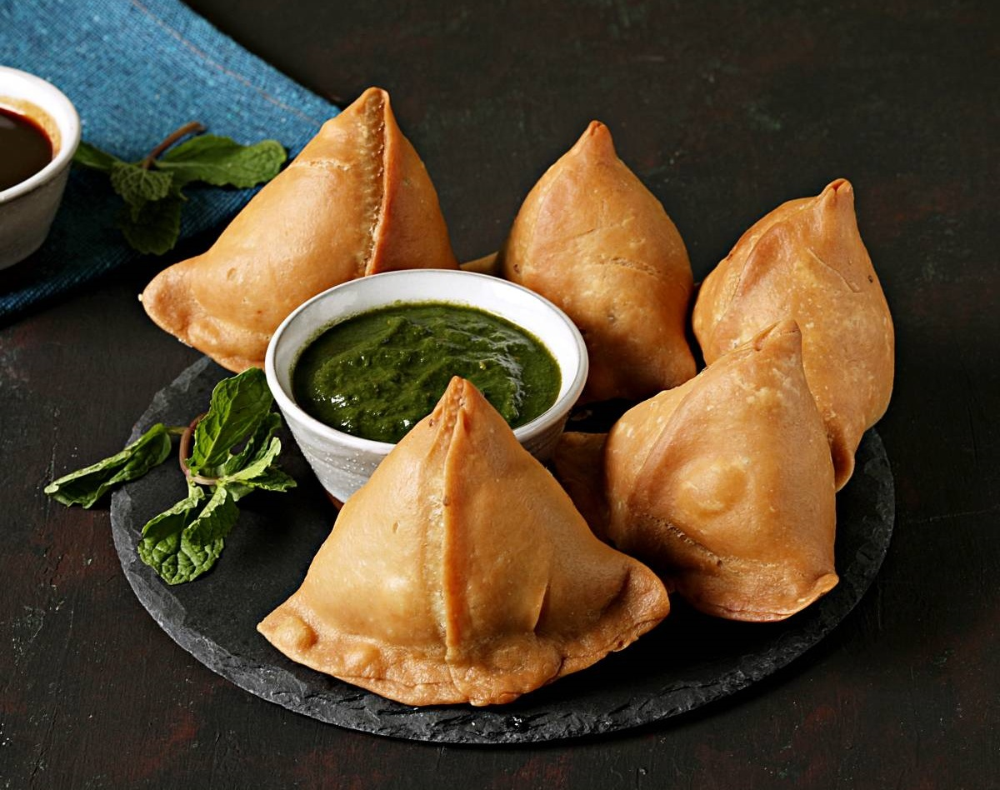

Ingredients:
For the Dough:
- 2 cups all-purpose flour
- 4 tablespoons oil or ghee
- 1/2 teaspoon salt
- Water, as needed to knead the dough
For the Filling:
- 3 medium potatoes, boiled and mashed
- 1 cup green peas, boiled
- 1 teaspoon cumin seeds
- 1 teaspoon mustard seeds
- 2-3 green chilies, finely chopped
- 1 teaspoon ginger, grated
- 1 teaspoon garam masala
- 1 tablespoon lemon juice
- Salt to taste
- Fresh coriander leaves, chopped (for garnish)
Instructions:
- In a large bowl, mix all-purpose flour, salt, and oil. Gradually add water and knead to form a smooth dough. Cover and let it rest for 30 minutes.
- In another pan, heat a little oil and add cumin seeds and mustard seeds. Once they splutter, add green chilies and ginger. Sauté for a minute.
- Add the mashed potatoes and green peas to the pan. Stir in garam masala, lemon juice, and salt. Cook for a few minutes, then remove from heat and let it cool.
- Divide the dough into small balls and roll each into a circle about 6 inches in diameter. Cut the circle in half to form two semi-circles.
- Take one semi-circle, form a cone by folding it, and seal the edges using a little water.
- Fill the cone with the potato-pea mixture, then seal the top edges to form a triangle shape. Repeat with the remaining dough and filling.
- Heat oil in a deep frying pan over medium heat. Fry the samosas in batches until golden brown and crispy. Drain on paper towels.
- Serve hot with chutney or sauce of your choice.